SPHERE: MISSION CONTROL

THERMAL INSULATION COMPARATIVE STUDY
This laboratory investigates transient cooling, thermal resistance and the agreement between a lumped-parameter model and measured temperature data.
Learning Objectives
By the end of this laboratory, you should be able to:
- distinguish conduction, convection and radiation within the experimental system;
- apply Newton's law of cooling and interpret the effective cooling constant $k$;
- acquire, record and present time-series temperature measurements;
- calculate temperature residuals and mean absolute error (MAE); and
- evaluate experimental uncertainty and the limitations of a lumped-parameter model.
WORKFLOW
To achieve maximum learning outcome and experimental precision, follow the 5-Stage Master Execution Flowchart below. Complete all activities in sequence: review theory first, assemble hardware, collect lab data, complete your Task Sheet analysis, and test knowledge with Flash Cards.
Read Sections 1–4 of this manual. Review Newton's Law of Cooling, heat transfer mechanisms (conduction, convection, radiation), and experimental safety SOP before handling hot water.
Assemble the $100\text{ mL}$ core water container, seal the temperature probe, and apply your team's assigned insulation configuration (Bare Control, Cotton Fiber, Bubble Wrap, or Reflective Film).
Run theoretical predictions on Mission Control Console (`index.html`). Lower capsule into $0^\circ\text{C}$ ice bath and record temperatures every 60s for 15 mins in Mission Control and your paper log.
Open Student Task Sheet. Log readings, plot curves, compute temperature residuals ($|\Delta T|$) and MAE score, and answer analytical evaluation questions.
Open SPHERE Flash Cards. Test your understanding of thermal insulation concepts, Newton's law formulas, residual calculations, and aerospace applications.
1. ENGINEERING CONTEXT & OBJECTIVES
Spacecraft thermal control must account for radiative exchange, internal heat generation and highly variable external heat fluxes. In vacuum there is no external convection; thermal design therefore differs fundamentally from this water-bath experiment.
Aerospace multilayer insulation uses low-emissivity reflective layers separated by low-conductance spacers. The cotton, bubble wrap and reflective film used here form an educational multilayer assembly, not flight-qualified MLI.
Test the assigned insulation configuration under a common boundary condition. Compare observations with the analytical reference curve and report residuals, MAE, uncertainty sources and model limitations.
2. HARDWARE SETUP & SCHEMATIC
Assemble a sealed test capsule suitable for controlled immersion:
| HARDWARE PART | DESCRIPTION | WHAT IT DOES IN OUR LAB |
|---|---|---|
| Core Jar | $100\text{ mL}$ wide-mouth glass jar | Holds our hot water core ($T_0 = 80.0^\circ\text{C}$), representing the astronaut's internal body heat. |
| Prepared Lid | Jar lid with a probe opening | Supports consistent probe placement; seal using the approved lab method and leak-test before use. |
| Digital Sensor | Waterproof digital thermometer | Measures internal core water temperature ($T_{\text{obs}}$, accuracy $\pm 0.5^\circ\text{C}$). Record the accuracy for your instrument. |
| Ice Bath Chamber | Ice-water slurry ($0.0^\circ\text{C}$) | Provides a repeatable low-temperature boundary sink ($T_{\text{env}} = 0.0^\circ\text{C}$) for comparative testing. |
Hardware Setup & Physical Assembly:
Review the actual experimental apparatus photos below. Ensure that your core jar, thermometer probe, lid seal, and insulation barriers match the specification before running tests:
Hardware Inventory & Setup Checklist
As shown in the full-scale toolkit photograph above (images/equipments.png), verify that your
lab station is equipped with all essential components before beginning assembly:
- Core Vessel: $100\text{ mL}$ wide-mouth glass jar with prepared probe lid.
- Digital Temperature Sensor: Waterproof stainless steel probe with LCD readout ($\pm 0.5^\circ\text{C}$).
- Thermal Protection Materials: Cotton fiber spacer, sealed bubble wrap, reflective Mylar foil, and securing tape.
- Ice-Water Sink Vessel: Outer bath container for $0.0^\circ\text{C}$ slurry immersion.
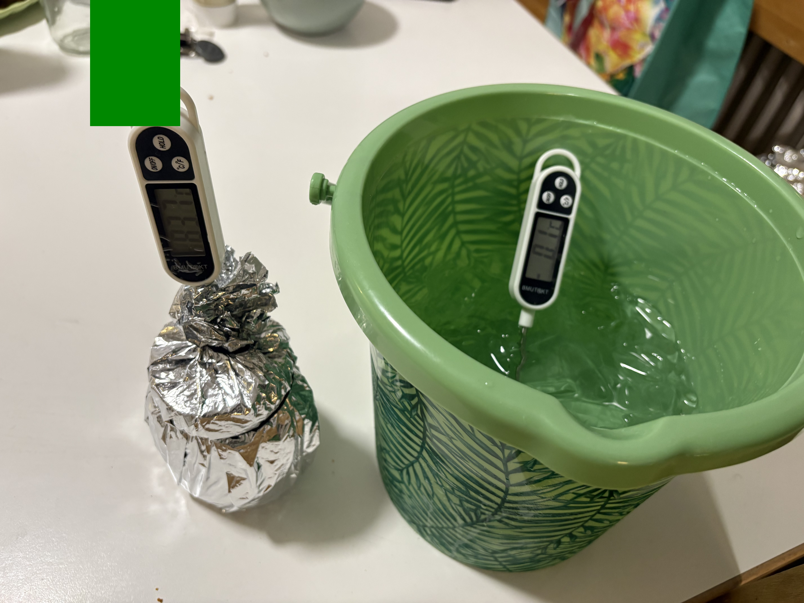
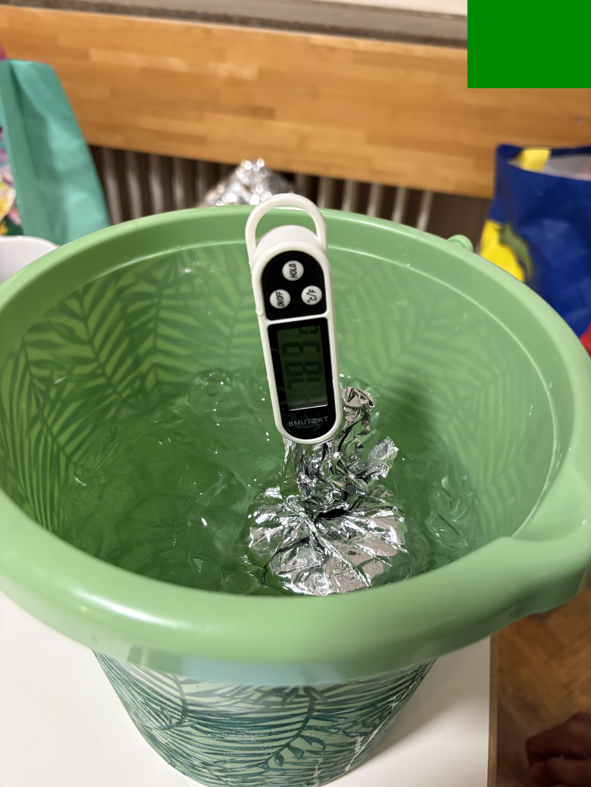
- Feed the Sensor: Slide the metal temperature probe through the pre-drilled opening in the jar lid (see Photo A).
- Set the Depth & Position: Position and secure the lead wire so the sensor hangs suspended in the vertical and horizontal center of the $100\text{ mL}$ liquid volume (see Photo B).
- Seal and Leak Test: Seal around the probe insertion hole using the approved lab sealant method. Screw lid tightly and perform a cold leak-check before hot liquid filling.
- Verify Clearance: Ensure the metal probe tip never touches the glass vessel walls or bottom floor to prevent conduction artifacts through the glass shell.
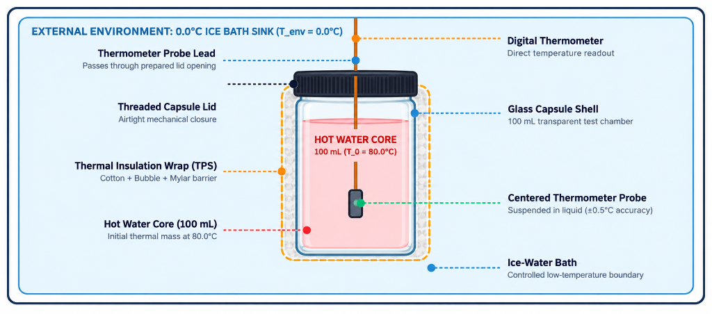
3. THE 4 INSULATION CONFIGURATIONS
Each team tests one of four configurations under the same nominal boundary conditions ($T_0 = 80.0^\circ\text{C}, T_{\text{env}} = 0.0^\circ\text{C}$):
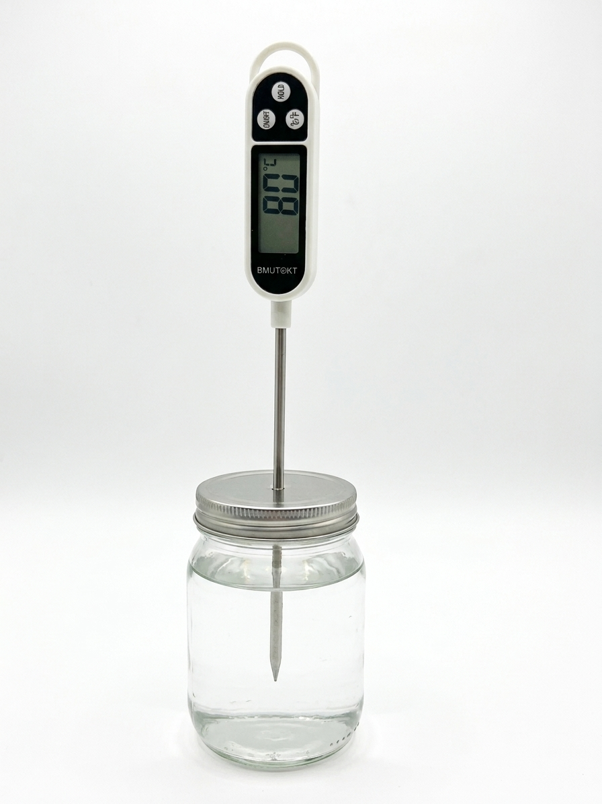
A. BARE CONTROL $k \approx 0.150\text{ min}^{-1}$
Plain uninsulated glass capsule. High cooling rate due to direct conduction through glass and rapid convective boundary currents.
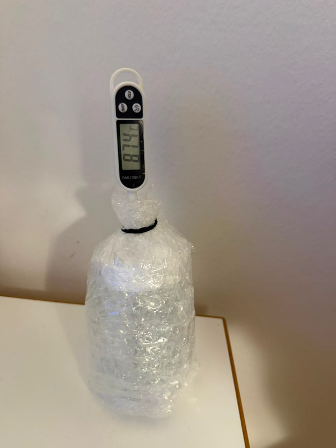
B. BUBBLE WRAP $k \approx 0.040\text{ min}^{-1}$
Two tightly wrapped layers of bubble wrap. Sealed air pockets eliminate natural fluid convection currents and trap air insulation.
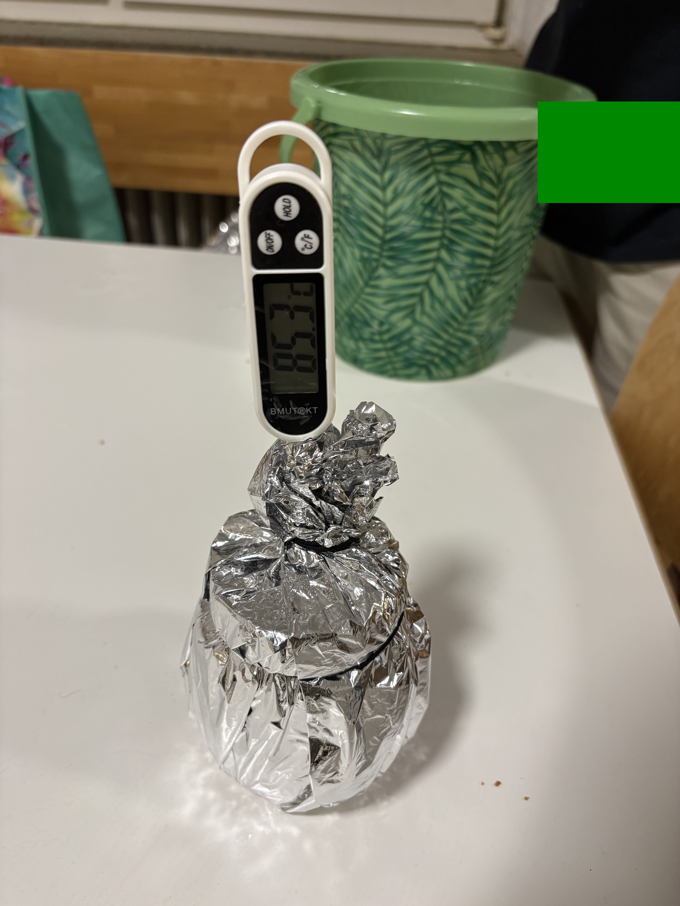
C. MYLAR FOIL $k \approx 0.121\text{ min}^{-1}$
Single-layer reflective radiant barrier. Low emissivity ($\epsilon \approx 0.03$) reflects infrared thermal radiation back into the capsule core.
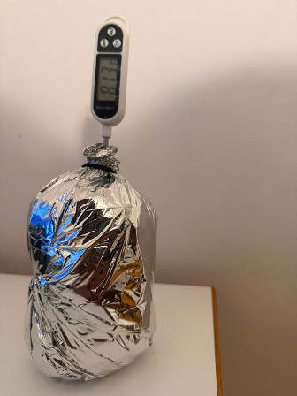
D. MULTILAYER ASSEMBLY $k \approx 0.015\text{ min}^{-1}$
Composite thermal shield. Combines inner cotton spacer, mid bubble wrap convection block, and outer Mylar radiant barrier for maximum $R_{\text{th}}$.
Step-by-Step Layer Application Sequence
As clearly illustrated in the MLI Parts Diagram (images/full-mli-parts.png)
on the left, assemble the multi-barrier thermal protection system layer by layer:
- Layer 1 (Inner Cotton Spacer): Wrap the glass core jar first to block direct conductive heat pathways.
- Layer 2 (Middle Bubble Wrap): Apply sealed bubble wrap to eliminate convective fluid circulation.
- Layer 3 (Outer Mylar Shield): Enclose with shiny Mylar foil to reflect radiative infrared heat waves back inside.
Optional extension: Add a fifth cotton-only trial to isolate the contribution of the inner fibrous layer.
4. THE PHYSICS: NEWTON'S LAW OF COOLING
Heat always flows from warmer objects to cooler surroundings. Over 300 years ago, Sir Isaac Newton discovered that the rate at which an object cools is proportional to the temperature difference between the object and its environment:
$T(t)$ = Predicted core temperature ($^\circ\text{C}$) at minute $t$
$T_{\text{env}}$ = Ice bath temperature ($0.0^\circ\text{C}$)
$T_0$ = Starting core temperature ($80.0^\circ\text{C}$)
$k$ = Cooling rate constant ($\text{min}^{-1}$)
Interpretation of $k$: The fitted cooling constant $k$ has units of $\text{min}^{-1}$. Under otherwise identical conditions, a smaller value corresponds to a slower approach to the bath temperature.
INDIVIDUAL PREDICTION CURVES ($T_0=80.0^\circ\text{C}$, $T_{\text{env}}=0.0^\circ\text{C}$)
5. STEP-BY-STEP LAB WORKFLOW
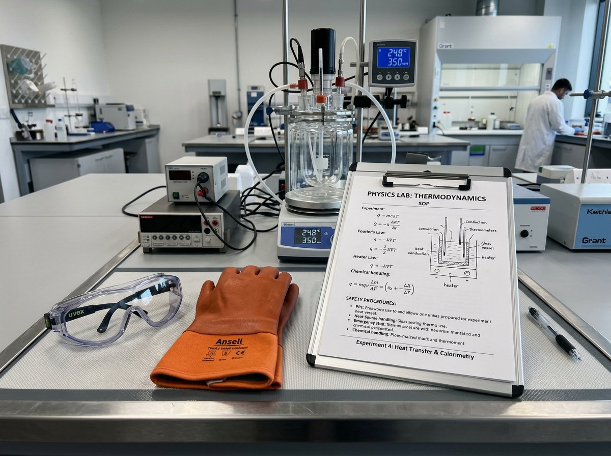
1. Review Physics Theory & Pass Pre-Flight Quiz
Before handling hot water, review Sections 1–4 of this manual. Understand Newton's Law of Cooling ($T(t) = T_{\text{env}} + (T_0 - T_{\text{env}}) e^{-kt}$), heat transfer mechanisms (conduction, convection, radiation), and experimental safety SOP. Ensure thermal safety gloves and protective eyewear are equipped.

2. Set Up Web Simulator & Run Theoretical Curve
Launch the Mission Control Console software (`index.html`). Navigate to the Simulator tab, select your team's assigned insulation configuration (Bare, Bubble Wrap, Mylar, or Multilayer), verify initial parameters ($T_0 = 80.0^\circ\text{C}, T_{\text{env}} = 0.0^\circ\text{C}$), and click RUN SIMULATION PREDICTION to generate the baseline theoretical model curve.

3. Prepare Liquid Core & Record Initial Temperature ($T_0$)
Carefully measure exactly $100\text{ mL}$ of hot water heated to approximately $80.0^\circ\text{C}$. Pour the hot water into your glass capsule core, secure the prepared lid with thermometer probe inserted, seal tightly, and read the initial baseline temperature $T_0$ off the digital display. Record this exact value as your minute-0 starting data point ($t=0$).
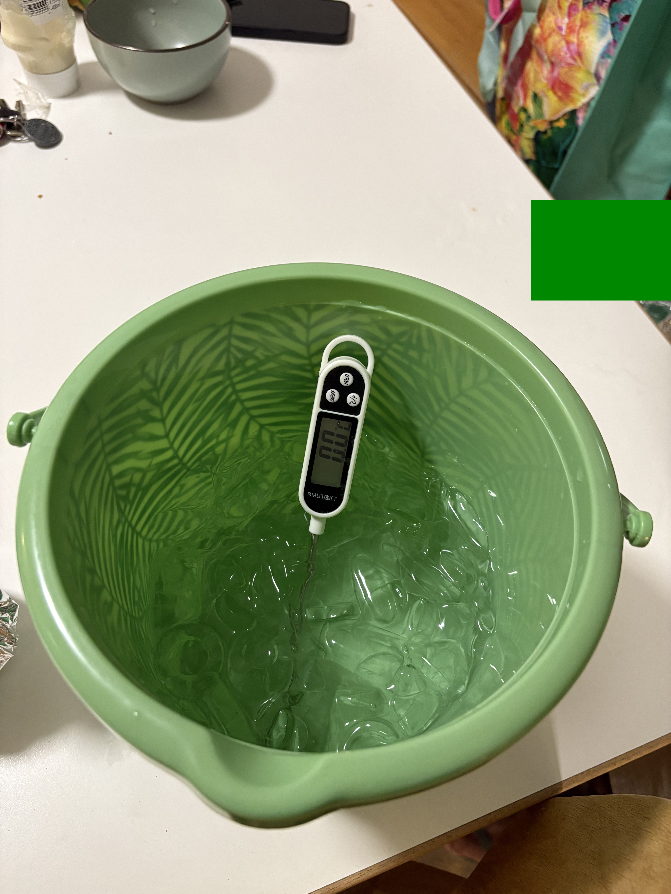
4. Submerge Capsule in 0.0°C Ice Bath & Start Timer
Verify the external ice-water slurry bath is stabilized at $0.0^\circ\text{C}$ ($T_{\text{env}}$). Gently lower the insulated capsule into the ice bath until the liquid core level is completely below the external ice-water line. Simultaneously hit START TIMER in the Mission Control Console Measurement Log tab.
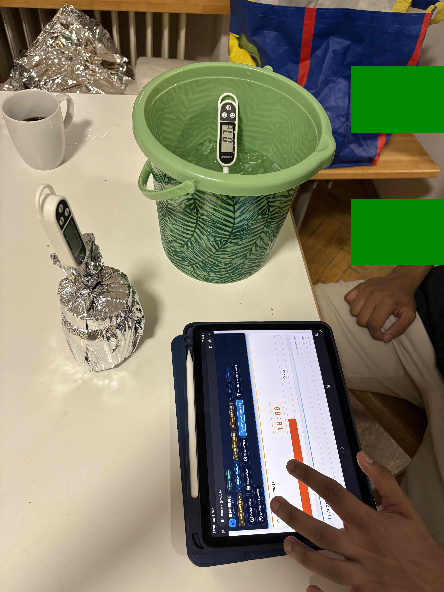
5. Log Temperatures Every 60 Seconds for 15 Minutes
Continuously monitor the digital thermometer reading during the active 15-minute cooling run. At every 60-second chime ($t = 1, 2, 3, \dots, 15\text{ min}$), read the observed temperature ($T_{\text{obs}}$) and immediately enter it into your paper Student Task Sheet log table and the live Mission Control Console interface.
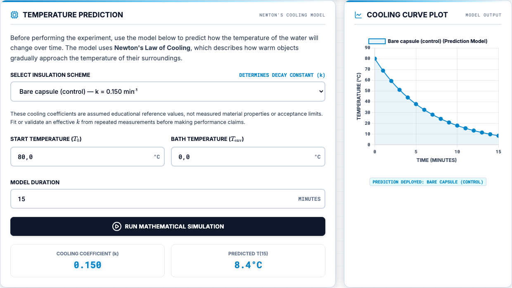
6. Compute Residuals ($|\Delta T|$) & Calculate MAE Score
Once the 15-minute logging run concludes, compare your measured empirical curve ($T_{\text{obs}}$) against the theoretical model ($T_{\text{model}}$). Calculate the temperature absolute residuals $|\Delta T_i| = |T_{\text{obs},i} - T_{\text{model},i}|$ for each minute. Compute your team's Mean Absolute Error score ($\text{MAE} = \frac{1}{16}\sum_{i=0}^{15} |\Delta T_i|$), analyze sources of experimental error, and complete the analytical evaluation questions on your Task Sheet.